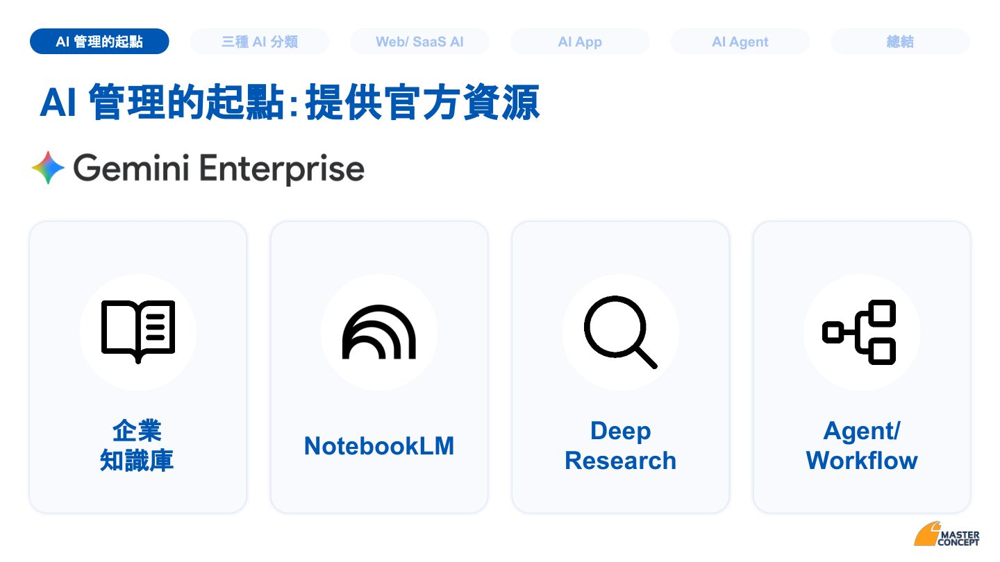
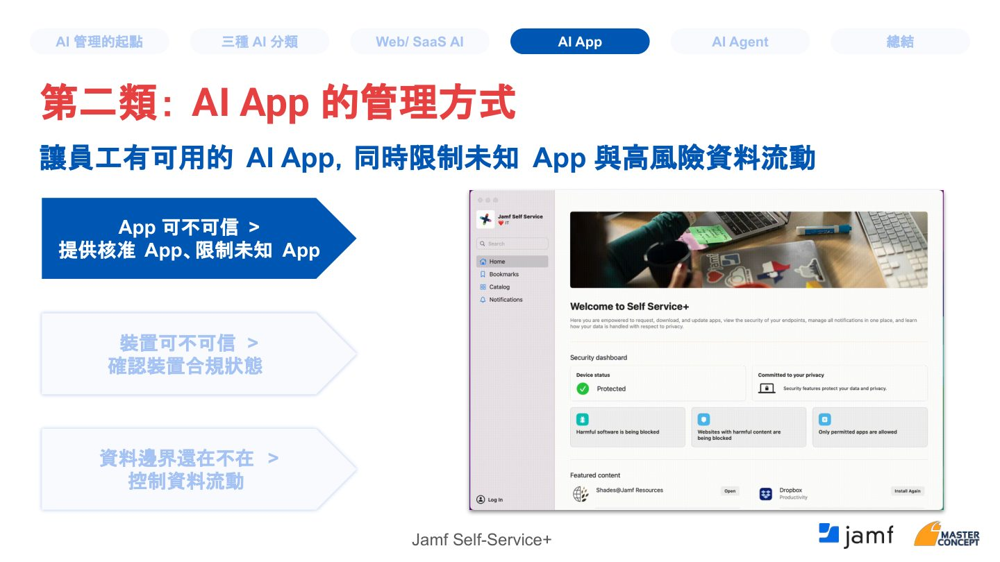
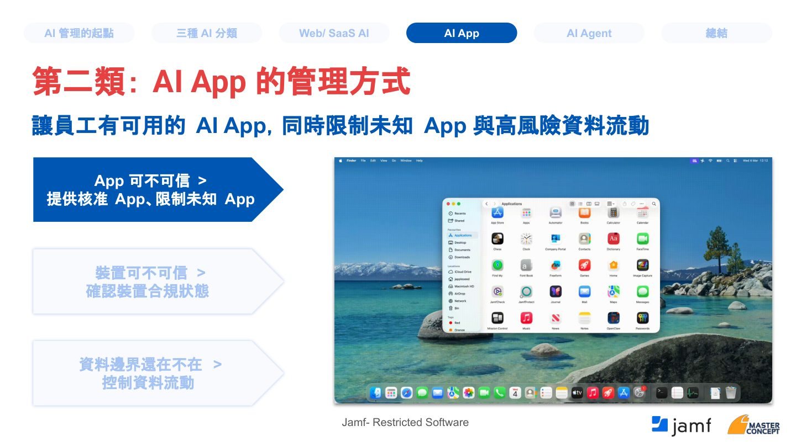
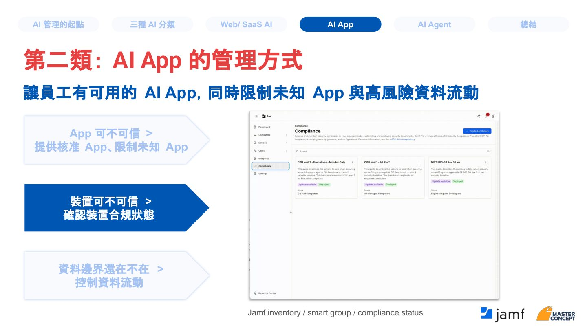

摘要
本場分享聚焦企業員工日常使用AI已從「要不要開放」轉變為「怎麼管理」的課題。講者將企業內的AI使用分為Web/SaaS AI、AI App、AI Agent三大類，並分別說明每一類所需的身份存取、裝置合規與授權邊界管理方式，同時提醒即使建立官方AI主路徑，仍會存在Shadow AI、帳號混用等治理缺口。最後提出建立、盤點、分類佈局三步驟，作為企業展開AI管理的起點。
重點整理
- AI管理的起點是提供官方AI資源，涵蓋資料保護(Data Protection)、可視性(Visibility)、身份與存取(Identity & Access)、法規遵循(Compliance)四大支柱
- 即使有官方AI路徑，企業仍面臨Shadow AI、Profile與帳號脈絡混用、AI App存取相機麥克風/螢幕錄製、AI Agent代表使用者執行動作等治理缺口
- 企業AI可分為Web/SaaS AI、AI App、AI Agent三類，分別對應「身份條件與資料動作」「環境控管」「授權與紀錄」三種管理重點
- AI App管理需同時確認App可信度、裝置合規性與資料邊界，可透過Windows Intune/Company Portal或Apple Jamf等工具落地
- AI Agent管理強調Scope（僅取得完成任務所需權限）與Time（權限有時效）兩大原則，Token到期後Agent必須重新請求存取
重點圖片／架構圖




從禁止到管理：AI已全面進入員工日常
講者指出，員工已普遍使用AI整理文件與會議內容、分析資料產出報告、協助撰寫程式與查找錯誤、製作簡報與客戶溝通內容，但企業整體仍缺乏可視性、難以控管。AI管理的起點在於提供官方資源，讓企業級AI平台涵蓋資料保護（企業資料不被未經允許用於訓練模型）、可視性（讓AI使用回到可記錄、可管理範圍）、身份與存取（接回企業帳號、角色與權限）以及法規遵循（支援AI使用政策、稽核與內控要求）四大能力。
官方資源之外的治理缺口
即使企業提供官方AI資源，員工仍可能使用主路徑之外的Shadow AI工具，導致企業難以掌握資料輸入與流向；企業資料也可能在企業帳號、個人Profile與外部AI工具之間流動；此外，AI開始以App形式出現在桌面與行動裝置，涉及相機麥克風存取、螢幕錄製與背景同步；而AI Agent更開始代表使用者存取系統、呼叫工具並執行動作，帶來新的治理挑戰。
第一類：Web/SaaS AI的管理方式
在身份層，企業可透過Group/Role-based AI Access決定哪些部門能使用哪些AI、建立Device-based Access要求受管合規裝置才能使用高風險AI/SaaS、針對外包與臨時人員設定較短的session並自動回收（Lifecycle/Contractor Control）、限制工作資料只能在企業帳號與受管Profile中處理（Account/Profile Context），並在異常情境下觸發風險式Step-up MFA。在瀏覽器層，管理重點則轉為使用者的「動作」，例如複製貼上、上傳下載、列印與網站存取，並可透過浮水印與行為模式分析留下紀錄；以市占最高的Chrome為例，Edge可搭配M365 + Edge for Business + Purview DLP，其他瀏覽器則需仰賴IAM限制可用情境。
第二類與第三類：AI App與AI Agent的管理方式
對於AI App，企業需確認三件事：App是否可信（哪些是核准工具、哪些仍在評估、哪些不允許處理企業資料）、裝置是否可信（公司裝置/BYOD、作業系統與合規狀態），以及資料邊界是否仍在（能否複製到個人AI App、截圖錄影、讀取剪貼簿或相簿），並可透過Windows體系的Intune、Company Portal、App Control、Defender或Apple體系的Jamf（Self-Service+、Restricted Software、裝置盤點與行為分析）落地。對於AI Agent，管理核心則是「Agent代表誰、能存取哪些資源、權限能否限縮追蹤與撤銷」，具體實作為使用者授權給Agent後，Agent向API請求時需經過Access Policy Check（涵蓋user context、agent identity、requested resource、scope/risk），取得具時效的Access後執行動作，Token到期後必須重新請求存取。
三步驟收斂：建立、盤點、分類佈局
講者總結三個關鍵步驟：首先建立並提供官方AI主路徑，讓員工有可用、可授權、可稽核的AI資源；其次盤點潛在AI使用情況，確認AI實際出現在Web/SaaS、App或Agent哪個層面；最後依使用型態分類佈局管理重點，Web/SaaS AI著重資料動作與身份條件、AI App著重受控執行環境、AI Agent則著重授權邊界與執行紀錄。核心訊息是「先看見，才能開始管理」。